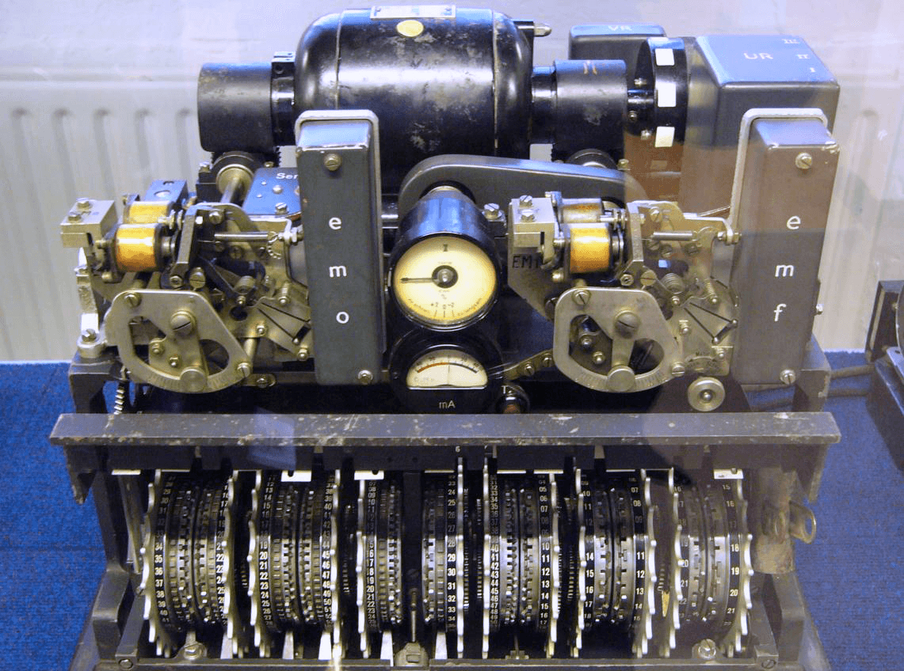

Lorenz Cipher
A German strategic teleprinter cipher — analysis of its traffic helped lead to Colossus, an early programmable electronic computer.
Tiltman: depth (1941) · Tutte: structure (1942) · Colossus: wheel settings (1944)
Why This Matters
The Lorenz SZ40/42 protected Hitler’s highest-level strategic communications. John Tiltman recovered messages and key material from a repeated-key transmission; Bill Tutte and the Research Section then inferred the machine’s structure. Tommy Flowers and his team later built Colossus to accelerate statistical wheel-setting.

While Enigma protected German field communications, the Lorenz SZ40/42 protected Hitler's strategic communications to his senior commanders. Where Enigma was a hand-operated cipher machine, Lorenz encrypted teleprinter signals automatically. An operator could type plaintext at a keyboard or send it from prepared paper tape; the cipher attachment encrypted the signals for radio transmission. At the other end, a matching attachment decrypted the signals before the receiving teleprinter printed or punched the plaintext.
On August 30, 1941, a German operator sent a 4,000-character message, received a request to resend, and sent it again — with the same settings but slightly different plaintext (abbreviating some words). John Tiltman used this depth to recover the two messages and their shared keystream by hand. Tutte and the Research Section analysed the recovered key and inferred the machine’s structure by early 1942, without seeing the machine. Later, Flowers and his team built Colossus, operational at Bletchley Park in February 1944, to accelerate statistical wheel-setting.
Follow the Signal
- Plaintext input: a keyboard or prepared plaintext tape supplies teleprinter signals.
- Sending cipher attachment: the SZ combines those signals with its keystream.
- Radio link: the transmitter sends ciphertext signals to the receiving station.
- Receiving cipher attachment: the matching SZ removes the keystream.
- Plaintext output: the receiving teleprinter prints the message or punches it onto tape.
In the arrangement described in the wartime report, neither operator saw the ciphertext: there was no recorder between the cipher attachment and the radio equipment. British intercept stations recorded ciphertext for analysis; those intercept tapes belong to a different part of the story, including Colossus.
Source: I. J. Good, Donald Michie and Geoffrey Timms, General Report on Tunny: With Emphasis on Statistical Methods (1945), §11A(b)–(c), printed p. 4 / collected PDF p. 7.
Lorenz SZ42 used 12 cipher wheels:
5 Chi (χ) wheels: key stream
5 Psi (ψ) wheels: irregular key
2 Motor wheels: control Psi movement
Encryption: XOR operations on 5-bit
teletype characters (Baudot code)
C = P XOR χ-stream XOR ψ-stream
Wheel pin counts: 41,31,29,26,23,
43,47,51,53,59,
61,37
Joint wheel positions alone do not determine the output period
The output is deterministic; wheel states and keystream symbols can repeat
About this demo: This is a pedagogical model of the SZ40's structure — five chi wheels, five psi wheels, and the 37/61 motor wheels — with wheel bit-patterns generated deterministically from your seed rather than taken from historical pin settings. Ciphertext uses a 32-glyph alphabet (A–Z plus the digits 2–7) representing the machine's 5-bit teleprinter code, so digits in the output are expected. Encrypt and Decrypt are distinct directions — running Encrypt twice does not decrypt.
Both ran in parallel through the war, and both lived in the same Bletchley campus. They are the same family of problem solved with very different ambitions — and they failed for very different reasons.
| Enigma (1923 / field) | Lorenz SZ40/42 (1940 / strategic) | |
|---|---|---|
| Who used it | German armed services; configurations varied | German high-command teleprinter networks |
| Operator model | Hand-typed, lamp-board readout, telegraph the result | Keyboard or plaintext tape → cipher attachment → radio ciphertext; receiving attachment → plaintext printer or tape |
| Cipher primitive | Polyalphabetic substitution via 3–4 stepping rotors + reflector + plugboard | Vernam XOR of 5-bit Baudot characters with a 12-wheel pseudo-random keystream |
| Key space | ≈ 1.6 × 1020 (with plugboard) | Irregular stepping and wheel patterns determine the output cycle; this is not a keyspace estimate or a one-time pad |
| Fatal weakness | Reflector → no letter encrypts to itself → cribs eliminate placements | Reusing the same keystream creates a depth: CA ⊕ CB = PA ⊕ PB |
| What broke it | Cribs + electromechanical Bombe (Turing, Welchman, 1940) | Tiltman's manual depth recovery (1941) + Tutte's structure inference (1942) + Colossus wheel-setting (1944) |
| What it built | Large cryptanalytic teams with access varying by network and period | Programmable electronics — Colossus showed how electronic logic could accelerate statistical searches |
| Modern echo | Side-channel and operational security still beat strong primitives | Keystream reuse exposes plaintext relations; GCM and WEP have additional attack details |
Same Settings, Same Keystream?
The no-limitation SZ40 and later SZ42 configurations must be distinguished. Some later configurations fed a delayed fifth plaintext impulse into motor control, changing how the psi wheels stepped. This autoclave feedback meant that different plaintexts could produce different keystreams even from identical starting settings. Not every SZ42 configuration used plaintext feedback.
In general, C_A ⊕ C_B = P_A ⊕ P_B ⊕ K_A ⊕ K_B. The keys cancel only where K_A = K_B. Reusing starting settings alone does not establish that condition for a plaintext-feedback configuration. The depth experiment below assumes an identical keystream; the SZ40 teaching model above does not model later plaintext feedback.
Source: I. J. Good, Donald Michie and Geoffrey Timms, General Report on Tunny: With Emphasis on Statistical Methods (1945), §11B(g), (j), printed pp. 8, 10 / collected PDF pp. 11, 13; §43C(g), printed p. 317 / collected PDF p. 311, on the Herring link’s diverging psi streams. This distinction is not a claim that feedback made Lorenz generally secure.
Keystream reuse did not stay in 1941. In 2005 Hongjun Wu reported that Microsoft Word and Excel kept the same RC4 initialization vector when an encrypted document was re-saved, so two versions of one document were enciphered under the same keystream — the same C_A ⊕ C_B = P_A ⊕ P_B situation Tiltman exploited, with the versions playing the part of the two messages. Compare the access and assumptions side by side in what an attack result actually shows.
Enigma and Lorenz were attacked through combinations of mathematical structure, traffic, operating practices and intelligence. Neither story is adequately explained by operator error alone.
The operator's mistake (same settings, similar plaintext) created a "depth" — two messages XORed together give P1 XOR P2 (the keys cancel). Tiltman recovered the messages and keystream manually. Tutte and the Research Section then inferred the wheel structure by early 1942. Colossus, operational in February 1944, later accelerated statistical wheel-setting; it was not needed for the initial 1941 depth recovery.
Sources: NSA Center for Cryptologic History, Brigadier John Tiltman: A Giant Among Cryptanalysts (2007), pp. 25–26; The National Museum of Computing, Tunny and Heath Robinson, for the sequence leading to Colossus in February 1944.
The depth attack, in your browser
Two ciphertexts encrypted under the same Lorenz keystream. XOR them together and the keystream cancels — what remains is P1 ⊕ P2, a "depth" that leaks structure. Drag a guessed crib across the depth: readable output suggests a candidate placement, but does not prove the guess. A correct crib in one message recovers the corresponding slice of the other.
What you just witnessed: reusing a keystream exposes the XOR of the plaintexts. A correct crib reveals the matching span of the other message, not automatically both complete messages. In 1941, Tiltman recovered messages and key from the historical depth; Tutte and the Research Section used that key to infer the Lorenz structure by early 1942.
Why this still matters. Reusing an XOR keystream cancels it when two ciphertexts are XORed, exposing the XOR of the plaintexts. This confidentiality failure also arises when a modern stream construction repeats its key/nonce/counter input. WEP key-recovery attacks and AES-GCM tag forgeries have additional structure; they are not bit-for-bit copies of the Lorenz attack.
| Concept from Lorenz Cipher | Modern Evolution |
|---|---|
| Wheel-based keystream generator | Compare electronic keystream generators; mechanical wheels do not establish a direct design lineage |
| XOR teleprinter encryption | Binary stream constructions often combine plaintext and keystream with XOR |
| Breaking it built Colossus | Colossus demonstrated programmable electronic processing for a specific cryptanalytic task |
| Depth attack on reused settings | Keystream reuse can expose a relation between plaintexts; authentication failures require separate analysis |
Plaintext character: H
Baudot (ITA2) code: 10100 (5-bit)
Wheel outputs at current position:
χ wheels (5 bits): 0 1 1 0 1
ψ wheels (5 bits): 1 1 0 1 0
Step 1 — XOR with χ stream:
Plaintext: 1 0 1 0 0
χ stream: 0 1 1 0 1
Result: 1 1 0 0 1
Step 2 — XOR with ψ stream:
Intermediate: 1 1 0 0 1
ψ stream: 1 1 0 1 0
Ciphertext: 0 0 0 1 1 = Baudot "A"
After each character:
• All 5 χ wheels advance one position
• Motor wheels decide whether ψ wheels step
(irregular motion changes the keystream structure)
Output period depends on wheel patterns and stepping rules.
A product of wheel lengths is not a demonstrated keystream period.- Enigma Machine — A rotor cipher serving different communication roles
- One-Time Pad — Lorenz used XOR like a OTP but with a periodic key
- VIC Cipher — Cold War hand cipher with layered operations
| Exhibit | 30 of 172 |
| Era | WWII · Germany · 1940 |
| Trust | Broken |
| Inventor | Lorenz AG · German High Command |
| Year | 1940 |
| Key Type | 12-wheel teleprinter cipher (Vernam-based) |
| Broken By | Tiltman: depth (1941) · Tutte: structure (1942) · Colossus: wheel settings (1944) |